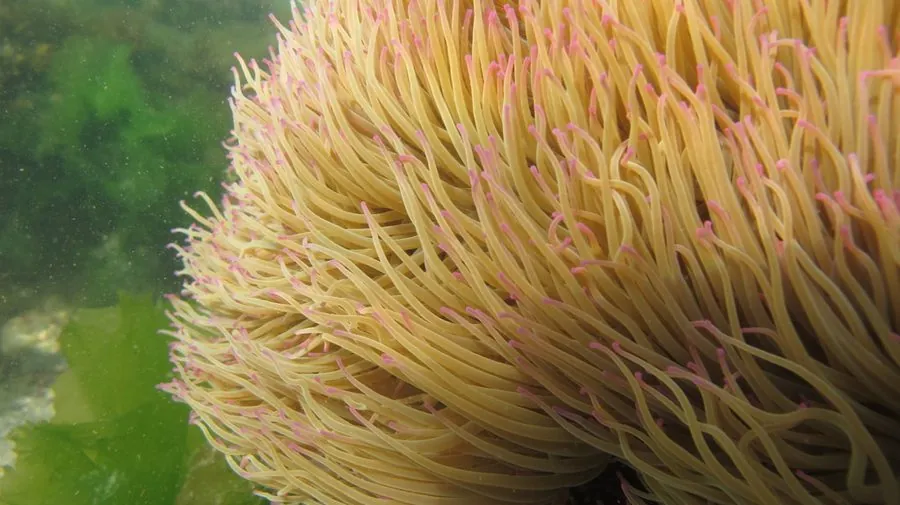

其他无脊椎动物 · 动物界
沟迎风海葵 Anemonia viridis

触手细长如蛇、末端常带紫色的海葵，生活在潮间带浅水，体内有虫黄藻，被触碰时蜇人，接触后皮肤会红肿。
- 分类
- 门刺胞动物门纲珊瑚纲目海葵目科海葵科属迎风海葵属
- 栖息环境
- 潮间带中低潮区与浅海岩礁，常附着在石缝和藻类间
- 地理分布
- 地中海与东北大西洋沿岸，英国、法国、西班牙等地常见
- 保护级别
- 暂无评估
物种志
沟迎风海葵的口盘直径5–10厘米，触手细长而柔软，长达10–20厘米，数目可达两百条，颜色多为绿褐或灰褐，末端常带紫色、粉色或蓝色。体柱较短，基部附着在岩石或贝壳上，触手随水流摆动，像一片随风摇动的草。
它生活在潮间带中低潮区和浅海岩礁，常成群出现在石缝和藻类之间。体内共生的虫黄藻通过光合作用为它提供营养，它同时也捕食小型甲壳类和浮游动物。沟迎风海葵可行纵向分裂的无性繁殖，也能有性繁殖。它的刺细胞比多数海葵更强，接触后皮肤会迅速红肿、灼痛、瘙痒，因此有海荨麻疹之称，严重时可能出现水疱或过敏反应。处理时用海水冲洗、去除残留触手并尽快就医，不要用淡水冲洗或用手揉搓。
形态与习性
- 口盘直径5–10厘米
- 触手长10–20厘米，可达两百条，末端带紫色
- 共生体内有虫黄藻，靠光合作用补充营养
- 食性也捕食小型甲壳类和浮游动物
- 繁殖可纵向分裂无性繁殖，也能有性繁殖
- 蜇伤刺细胞较强，接触后红肿灼痛，俗称海荨麻疹
- 处理海水冲洗、去除触手、及时就医
趣味知识
- 它的触手又细又长，摆动起来像风吹过的草。
- 被它蜇到会红肿灼痛，所以有海荨麻疹的绰号。
- 它靠体内的虫黄藻光合作用，补充不少营养。